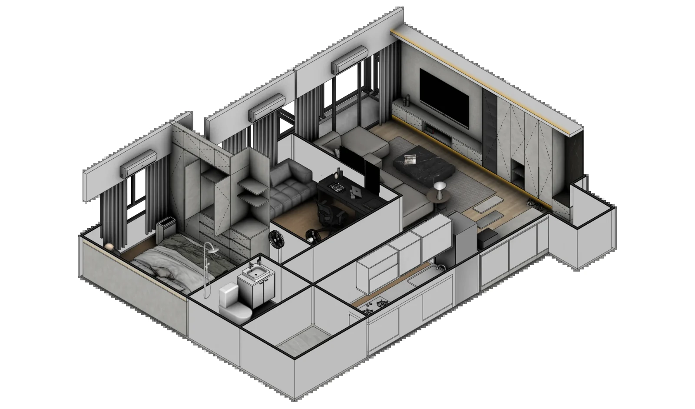

室內設計的溝通有一個常見落差：設計師說明的是尺寸、比例和動線，屋主腦中出現的卻可能是另一個家。雙方都以為已經理解，直到圖面深入甚至施工後，才發現「原來我們想的不一樣」。
MoonBlock 想處理的，正是這段從生活需求走到完整設計之前，最容易被跳過的共同理解。
為什麼室內設計提案不能只靠平面圖？
平面圖很適合標示尺寸、牆體與家具位置，但沒有設計背景的屋主，不一定能立刻從線條判斷櫃體有多高、走道還剩多少、沙發與餐桌放進去會不會太擠，也很難想像不同空間彼此看過去的感受。
參考照片則是另一個極端。它能表達喜歡的氣氛，卻不會自動回答自己的格局能否這樣配置、收納夠不夠，或設備和生活動線如何安排。
不是「最後看起來像哪一張照片」，而是「這樣配置後，我們每天會怎麼使用這個家」。
MoonBlock 不是一張特殊的 3D 圖，而是一套提案方式
MoonBlock 是玥森獨有的空間預演系統。它不是交給屋主自行操作的軟體，也不只是把模型換成鮮明色塊的畫面；真正的核心，是我們整理需求、建立方案、比較取捨與確認方向的順序。
初期先把複雜的住宅資訊拆成容易辨識的空間單元，讓收納、家具、設備、生活區域與動線同時出現在立體圖面上。屋主不需要先學會看專業圖說，也能指出哪裡符合習慣、哪裡仍有疑問。
當討論有了共同畫面，「想要多一點收納」「希望客廳開闊」「玄關需要區隔」這些抽象期待，才會變成可以比較的空間選擇。
先看懂生活：我們從使用習慣與過往居住經驗開始問
玥森不會一開始只問屋主喜歡哪一種風格。我們更想先知道：平常怎麼使用家裡？一家人什麼時候會在同一個空間？上一間房住下來，最想改善的體驗又是什麼？
這些答案會逐步變成設計條件：
- 回家後，鞋子、包包、外套與臨時物品放在哪裡。
- 常用電器要藏起來，還是留在隨手可用的位置。
- 收納增加之後，是否仍保有足夠的走道與採光。
- 家具尺寸、插座與設備位置能不能配合真正的使用方式。
- 孩子成長、在家工作或家庭成員改變時，哪些空間需要保留彈性。
設計不是替屋主決定怎麼生活，而是先理解原本怎麼生活，再避免把上一間房不順手的經驗帶進下一個家。
把需求變成立體圖面，才能更早看見空間取捨
住宅裡的決定通常彼此牽動。多做一段櫃體，可能讓收納增加，也可能壓縮走道；玄關多一道界線，能改善落塵與視線，也可能讓客廳顯得零碎。只討論單一項目，很容易忽略它對其他空間造成的影響。
MoonBlock 用立體視角與容易辨識的色塊，把這些關係放在同一張圖上。色塊不是裝飾，而是暫時降低材質與風格的干擾，讓討論先集中在比例、機能、動線以及保留與新增之間的關係。
收納增加多少、走道還剩多少，不只停留在口頭描述。
家庭成員與設計端可以針對同一個空間版本提出意見。
每次調整都回到生活需求，而不是只憑一時的畫面喜好。
為什麼不一開始就追求擬真的效果圖？
擬真圖並不是不好，而是需要出現在正確的階段。當空間骨架還沒有確認，太早加入漂亮的材質、燈光與擺飾，討論很容易先被顏色或氣氛吸引，卻忽略櫃體是否好用、設備能否維修、家具比例是否合理。
MoonBlock 在初期保留一定程度的抽象，是刻意的選擇。先確認格局、動線、機能與工程範圍，再進入材質和細節，屋主每一次做決定時，才知道自己正在確認哪一層問題。
先解決會影響生活與預算的空間問題，再把時間投入值得細化的方向。
方向確認後，再把空間概念發展成完整設計
當屋主與設計端對配置、動線、主要機能與工程範圍有了共識，下一階段才逐步加入材質、色彩、燈光、櫃體、五金、設備與施工細節。

這不是把色塊按一下就自動變成完成設計。每一項細化仍需要專業判斷、尺寸核對、材料選擇與工程整合；MoonBlock 的作用，是讓後面的工作建立在已被理解和確認的方向上，減少反覆推翻與各自想像。
MoonBlock 能做什麼，又不能取代什麼？
MoonBlock 能幫助屋主提早理解空間、具體討論需求，並看見每個選擇背後的取捨。它讓設計前期不再只有專業者看得懂，也讓家庭成員可以針對同一個版本形成共識。
但空間預演不取代現場丈量、設計細化、工程圖說、材料確認、報價或施工管理。圖面中呈現的概念，仍要依現場條件與正式服務範圍逐步核對。它也不保證所有想法都能同時成立，而是讓限制更早被看見，讓屋主有足夠資訊決定什麼最重要。
對我們來說，這才是預演的價值：不是預先展示一個完美結果，而是在真正投入裝修以前，先把生活與空間的關係想清楚。
先看懂生活，再把設計做細
家的樣子不應該只從一張風格圖開始。當使用習慣、過往經驗、家具設備與未來變化都被放進空間裡，設計才不只是看起來好，而是有理由地適合居住者。
如果你正在規劃台中新成屋、住宅翻修或局部裝修，可以先告訴我們家庭成員、平常的使用習慣，以及上一間房最想改善的事情。我們會先一起理解生活，再確認適合的設計與合作方式。
想看 MoonBlock 如何用在真實案件，也可以閱讀台中大里住宅局部裝修案例。
LINE 初步聊聊你的家